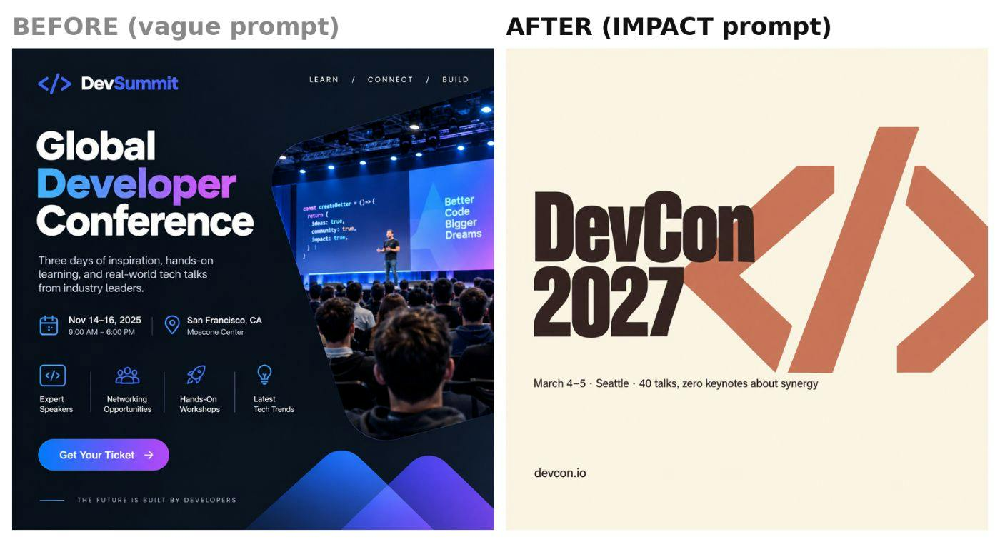
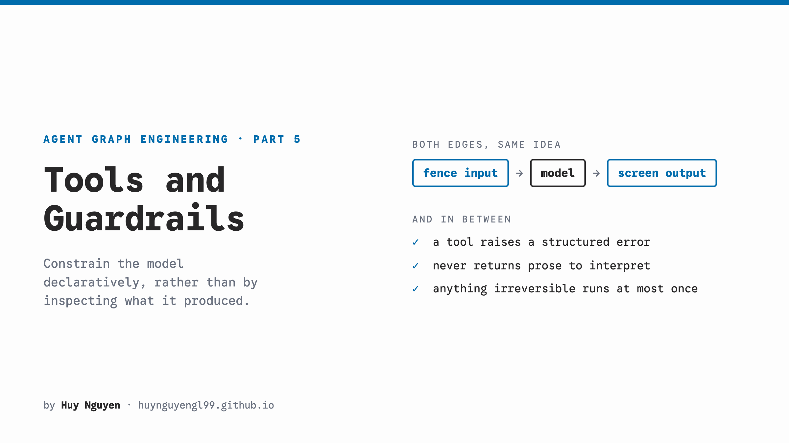
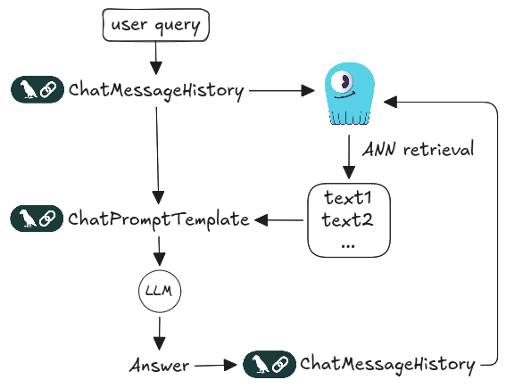

Восемь практик из HackerNoon: права выполнения, контекст, память и проверяемые границы tools.
8 основных статей3 на радаре257 материалов недели
О чём пишут
Агенту мало выдать доступ к инструментам: нужно знать, какое действие он вправе выполнить и что останется после сбоя. На этой неделе авторы разбирают rootless Docker, approval с привязкой к payload и журнал необратимых вызовов. Другая общая задача — давать контекст вовремя и сохранять его между сессиями. Для каждой практики ниже есть небольшой эксперимент и наблюдаемый критерий.
Главные статьи недели
01
Rootless Docker ограничивает ущерб от команд агента
Агенту достаточно доступа к rootful Docker, чтобы получить опасные полномочия на хосте. Автор переносит daemon под отдельного непривилегированного пользователя, закрепляет сокет и проверяет ресурсные ограничения.
Главное
Rootless Docker отделяет контейнерный root от root хоста; пользователь daemon всё равно должен иметь минимум прав.
Лимиты cgroups работают при cgroups v2 и systemd. Если docker info показывает driver none, ограничения могут игнорироваться.
Rootless не заменяет политику разрешённых команд и сетевого доступа. Проверка UID клиента в приведённом MCP-проекте ещё не реализована.
Попробовать за вечер
В отдельном Linux sandbox проверьте docker info и привязку DOCKER_HOST к пользовательскому сокету.
Запустите проверку автора: docker run --rm --cpus=0.5 busybox cat /sys/fs/cgroup/cpu.max. Затем проверьте memory и pids limit.
Метрика: cpu.max соответствует установленной квоте; агент не может обратиться к системному Docker socket.
Слова «современный» и «чистый» оставляют модели почти все решения о макете. IMPACT заменяет их измеримыми ограничениями и списком того, что в результат попадать не должно.
Главное
Автор задаёт иерархию заголовка и подзаголовка 3:1, роли максимум трёх цветов и конкретные поля.
Python и JavaScript builders собирают ограничения в повторяемый промпт. Исправление меняет один параметр, чтобы причину было видно.
Модель и настройки сравнения не названы. Точное соблюдение hex-кодов и шрифтов нужно проверять отдельно.
Попробовать за вечер
Возьмите один макет и составьте для него обычный промпт и вариант с блоками IMPACT из статьи.
На одной модели с одинаковыми настройками сравните иерархию, поля, число цветов и точность текста.
Метрика: число выполненных ограничений по одному checklist; удачный пример не считайте общей гарантией качества.

Сравнение автора: обычный промпт слева, ограничения IMPACT справа. Изменились иерархия и плотность макета, а также содержание примера.
Пользователь одобрил действие, но агент затем изменил сумму или получателя. Approval — одобрение пользователя. Предлагаемый протокол связывает его с каноническим payload, то есть точными параметрами действия, и проверяет эту связь непосредственно перед внешним вызовом.
Главное
Hash payload защищает от изменения действия, но сам по себе не защищает от двух workers, использующих одно approval.
Потребление approval требует одной условной операции в постоянном хранилище. Для повторов внешнего вызова нужен стабильный idempotency key.
Пример учебный: in-memory store не выдерживает конкуренцию и перезапуск. Atomic claim и reconciliation нужно реализовать в своём приложении.
Попробовать за вечер
Для одного sensitive tool перечислите security-relevant поля и добавьте тест изменения payload после approval.
Проверьте просроченное approval, двух workers и потерю ответа после успешного вызова provider.
Метрика: изменённое действие отклоняется; два workers не получают право на одну операцию; неизвестный исход виден оператору.
Большой AGENTS.md расходует контекст даже на простое исправление опечатки. Автор оставляет в корне карту проекта и условия чтения, а процедуры выносит в отдельные guides и skills.
Главное
Указатель связывает действие с файлом: перед изменением UI прочитать docs/agents/ui.md.
Проверять нужно фактическое чтение: typo task не должен загружать все guides, задача через несколько слоёв должна находить нужные.
Это метод проверки discovery, а не измеренный выигрыш в токенах. Автоматические imports могут заранее загрузить весь контекст.
Попробовать за вечер
В своём проекте вынесите одну длинную процедуру в guide и добавьте условный указатель в корневые инструкции.
В чистых сессиях выполните релевантную и нерелевантную задачу; сохраните список открытых файлов.
Метрика: нужный guide найден в релевантной задаче и не прочитан без причины в нерелевантной.
После новой сессии Claude Code теряет контекст о текущей ветке и следующем шаге. Автор хранит знания в Markdown, а lifecycle hooks записывают и возвращают небольшой handoff — заметку для следующей сессии.
Главное
MEMORY.md служит индексом: в контекст попадают указатели, подробности читаются по необходимости.
Stop hook сохраняет handoff, SessionStart возвращает его, если возраст меньше 48 часов.
В статье даны фрагменты, а не полный набор scripts. Пути, обработку Git и формат handoff нужно адаптировать к своей среде.
Попробовать за вечер
В своём workspace заведите индекс знаний и простую пару Stop/SessionStart hooks для handoff.
Перезапустите сессию со свежим handoff и отдельно с файлом старше 48 часов; проверьте git --no-optional-locks status в hook.
Метрика: свежая сессия правильно называет ветку и следующий шаг; устаревшая подсказка не загружается; задержка hook измерена.
При подключении удалённого MCP-сервера OAuth discovery находит адреса авторизации. Issuer — сервер, которому принадлежат credentials, учётные данные клиента. В разобранном автором сбое клиент доверял выбранному endpoint, хотя credentials принадлежали другому issuer.
Главное
Аудит касается OAuth-enabled HTTP clients; stdio-клиенты вне описанного сценария.
Проверить нужно deployed dependency, issuer в Python или expectedIssuer в TypeScript и сохранение этого поля в credential store.
Обновления SDK недостаточно без корректной конфигурации и миграции старого state. Lower-level helpers и отключённая issuer validation требуют отдельной проверки.
Попробовать за вечер
Найдите OAuth provider и lockfile реально развёрнутого MCP-клиента; сопоставьте их с advisories по ссылкам автора.
На тестовом клиенте проверьте несовпадающий discovered issuer и повторную загрузку credentials из своего storage.
Метрика: несовпадающий issuer вызывает отказ до отправки секрета; issuer сохраняется после перезапуска.
Свободный текст ошибки заставляет модель угадывать, что произошло и можно ли повторить действие. Автор вводит машинный error_type, а необратимые вызовы защищает ledger — журналом claim и результата.
Главное
Wrapper превращает ToolError в структурный результат, по которому граф выбирает дальнейший путь.
Перед необратимым вызовом записывается claim, после него — результат. Повтор одного run_id не должен создавать новое действие.
Падение между claim и записью результата оставляет неизвестный исход: нужен разбор человеком. Guardrails примера не покрывают содержимое tool responses, PII и sandboxing.
Попробовать за вечер
В тестовом tool замените текстовую ошибку на error_type и проверьте ветку обработки в графе.
Повторите один run_id и внесите сбой между claim и record; используйте проект по ссылке автора как основу.
Метрика: повтор не запускает второй внешний вызов; неизвестный исход помечен и не превращается в автоматический retry.

Схема автора: ограничить вход, вызвать модель, проверить выход. Внутри потока tools возвращают структурные ошибки; неизвестный исход операции всё равно требует разбора.
История в памяти процесса пропадает при restart и расходится между replicas. Рецепт сохраняет сообщения в ScyllaDB через Cassandra connector LangChain, связывая их с session_id.
Главное
CassandraChatMessageHistory читает и пишет сообщения; RunnableWithMessageHistory подключает историю к вызову модели.
Тот же session_id возвращает прежний диалог другой replica. Новый идентификатор должен начать отдельную историю.
Нужны ScyllaDB 2026.2, credentials и окружение demo. Обещание предсказуемого P99 не подтверждено замерами; код лучше брать из указанного репозитория.
Попробовать за вечер
Откройте vector-search-examples по ссылке автора и настройте тестовые ScyllaDB и Groq credentials.
Выполните диалог, перезапустите процесс с тем же SESSION_ID, затем повторите с новым.
Метрика: прежний session_id возвращает прошлые сообщения, новый не раскрывает чужую историю; ответ использует нужный контекст.

История сообщений читается перед ChatPromptTemplate и пополняется после ответа. ScyllaDB также возвращает контекст через ANN retrieval; история привязана к session_id.
Сравнение gh показывает: экономия текста может происходить от выбора полей, а не от замены MCP на CLI. В работе не измеряли inference, поэтому токены возвращённого текста нельзя считать стоимостью всей задачи.
Соберите вопрос, перефразировку и противоположный смысл в одну тройку для проверки retrieval или semantic cache. Маленький английский набор автора не доказывает результат на вашем корпусе.
Эксперимент сравнивает expert personas и нейтральные инструкции на single-call multiple-choice вопросах. Переносить результат на coding agents без своего парного eval нельзя.
✓Проверить негативные сценарии approval на одном tool.Вторник
✓Выделить один guide и проверить discovery в чистой сессии.Четверг
✓Повторить restart тест постоянной памяти.Выходные
За неделю собраны все 257 статей поискового индекса HackerNoon; 60 прошли редакционный просмотр, 20 прочитаны полностью. Восемь практик прошли отдельное опровержение; три материала оставлены на радаре.
Окно: 01–08.11.2026. Покрыто полностью, отказов сбора нет. Счётчик прочтений доступен для 235 из 257 материалов; он не использовался для ранжирования.